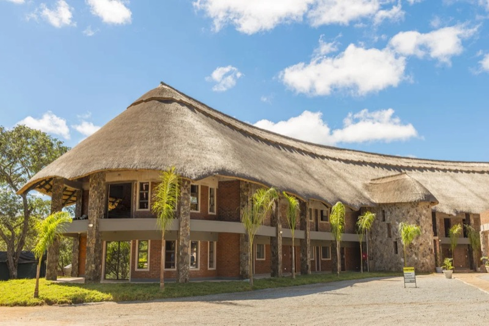
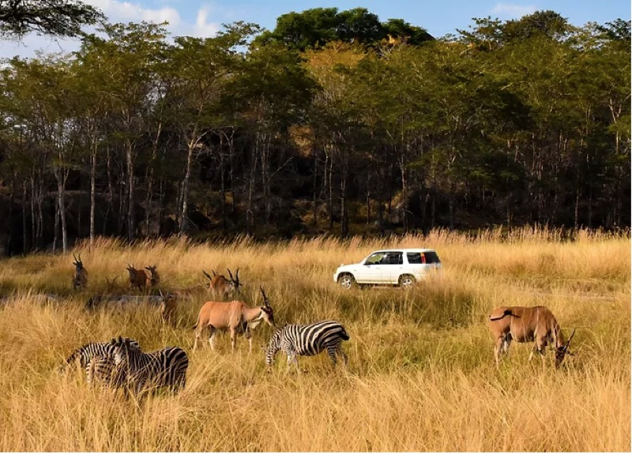
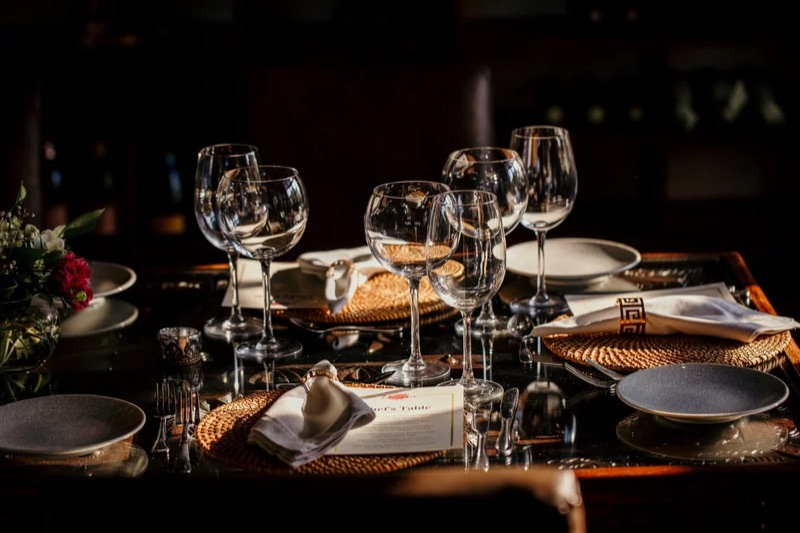

Coming from a little further afield? Thank you for making the journey to celebrate with us. Here are some flight options and places to explore while you are in Harare.
Getting here
The journey over.
Fly into Robert Gabriel Mugabe International Airport in Harare (HRE). There are several airlines and routes to choose from, depending on where you are travelling from.
Our first suggestion from London
Air Zimbabwe · direct from Gatwick
Air Zimbabwe has announced a direct London Gatwick (LGW) to Harare service. With no change of planes, a direct flight is usually the quickest option from London.
Check that the service operates on your preferred travel dates before booking; schedules for August 2027 may change.
Another route worth comparing is to fly into Johannesburg's O.R. Tambo International Airport (JNB), then connect to Harare. For example, British Airways and Virgin Atlantic fly direct from London Heathrow to Johannesburg, and Airlink operates onward flights to Harare.
Choose flights through the same Johannesburg airport, allow enough connection time and, where possible, book the journey on one ticket. Separate tickets may require collecting and rechecking your bags.
Compare total travel time rather than just the number of connections. Exact routes, fares and availability depend on your departure airport and dates.
Before you travel
A little planning
Check passport, Zimbabwe entry requirements and any transit requirements with the relevant authorities and your airline for your nationality and itinerary.
Once your plans are taking shape, let us know your expected arrival date and whether you are interested in accommodation. Sharing interest is not a confirmed booking.
We have a couple of places in mind for your stay in Harare. Start with Manna Resorts below; we will add our other accommodation recommendations here once confirmed.

Photo: Manna Resorts
Glen Lorne · Harare
Manna Resorts
A retreat in Glen Lorne with landscaped gardens, a choice of room categories and thatched chalets. Browse the accommodation options and photographs to find a stay that suits you.
Please contact the resort directly to confirm availability, current rates and booking conditions for your travel dates.
If you are interested in booking accommodation with us, use our travel-plans form to share your name, any plus-ones and your expected arrival date in Zimbabwe.
This helps us gather interest; it does not reserve a room or confirm a booking. Group arrangements, prices and transport will be shared once confirmed.
Wildlife, wide-open spaces and a glass of something local. These are suggestions for your own free time, not organised wedding excursions. Please book directly and confirm availability, prices and transport with each venue.

Photo: Lion Park Harare
Game drives
Lion Park Harare
Explore the reserve on a self-drive game drive, or enquire about a guided safari tour. Look out for zebra, giraffe and antelope, with other animal experiences listed on the park's activities page.
A conservation sanctuary where you can learn about rescued wildlife, including elephants and giraffes. The sanctuary advertises morning and afternoon visits, with high tea or sundowners as part of its visitor experience.
Bookings are essential. Ask about the refreshments included in your chosen tour.
A countryside day out with estate wines and wildlife. Its Wine Tasting Lunch includes a vineyard tour, a tutored tasting, a vehicle safari and a three-course lunch.
Advance bookings are required; check the current package and what is included before visiting.
A few places to try for lunch, dinner or an evening drink. Follow the links for photographs, menus and reservations, and check opening hours and any age restrictions before you go.

Victoria 22's Wine Bar · photo from Victoria 22
Belgravia
Cobblestone
A restaurant at StoneArch on Normandy Road, with grilled dishes, wood-fired Neapolitan pizza and a refined setting for dinner.
From local crafts and one-off finds to boutiques and everyday shopping, here are a few places to explore. Stock, shops and opening hours can change, so check the linked pages before visiting.
Traditional crafts & unique finds
Avondale Flea Market
An open-air market at Avondale Shopping Centre, with arts and crafts, clothing and specialty items. A good place to browse for souvenirs and traditional pieces; ask individual traders about antiques and vintage finds, as stock varies.
A garden-style shopping complex on Shortheath Road, with boutiques and places to stop for a coffee. An option for a relaxed browse between other plans.
Suggestions checked in November 2026. Please confirm all travel and venue details for your own dates. Preview photographs are credited to the linked venues; more photos are available on their websites.